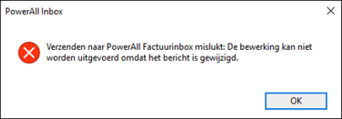
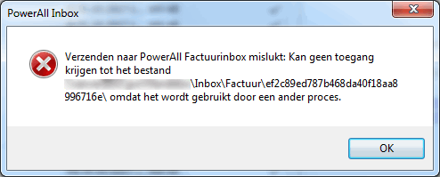
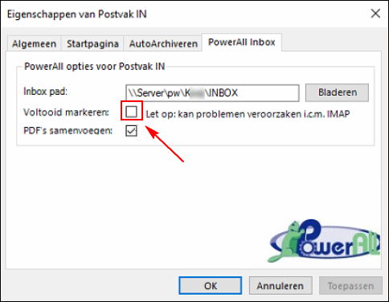
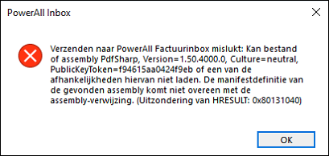
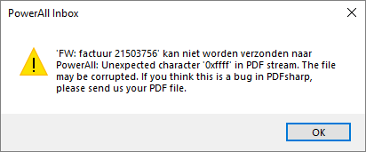

In Microsoft Outlook is het mogelijk om bepaalde e-mails te verzenden naar Powerall Connect.
Bij het verzenden van een e-mail/factuur uit Outlook naar de Powerall Factuurinbox kan één van deze meldingen verschijnen:

of
Belangrijk: Dit komt hoofdzakelijk voor bij IMAP (Internet Message Access Protocol). Dit is het protocol voor het synchroniseren van e-mail, er wordt hierbij direct op de mailserver gewerkt.
• Controleer dus het het email protocol.
• Indien dit ook voorkomt bij Exchange of POP s.v.p. doorgeven!
Om dit op te lossen, doorloopt u de volgende stappen:
Open Outlook.
Rechtermuisknop op Postvak IN, selecteer > Eigenschappen.
Het scherm Eigenschappen van Postvak IN verschijnt.
Ga naar tabblad Powerall Inbox.
Voltooid markeren moet hierbij uitgevinkt zijn.

Kies voor de knop OK.
Een email kan weer verzonden worden naar de Powerall Connect inbox.
Bovenstaand probleem kan voorkomen in de volgende situaties:
Opmerking: Een e-mail werd vanaf een bepaalde pc via een (trage) VPN verbinding in een map op de server gezet. Het duurde waarschijnlijk te lang om de status te wijzigen, vandaar deze foutmelding.
Foutmelding: Verzenden naar Powerall Factuurinbox mislukt:

Pdf-Sharp

Unexpected character ... in PDF stream. The file may be corrupted. Etc.
Repareer de Powerall Connect Werkstation installatie, zie:
Copyright ©